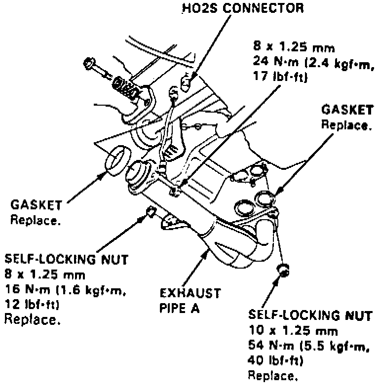
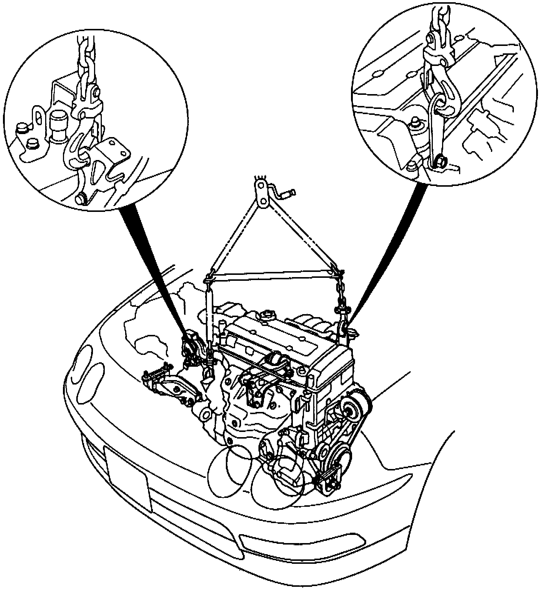
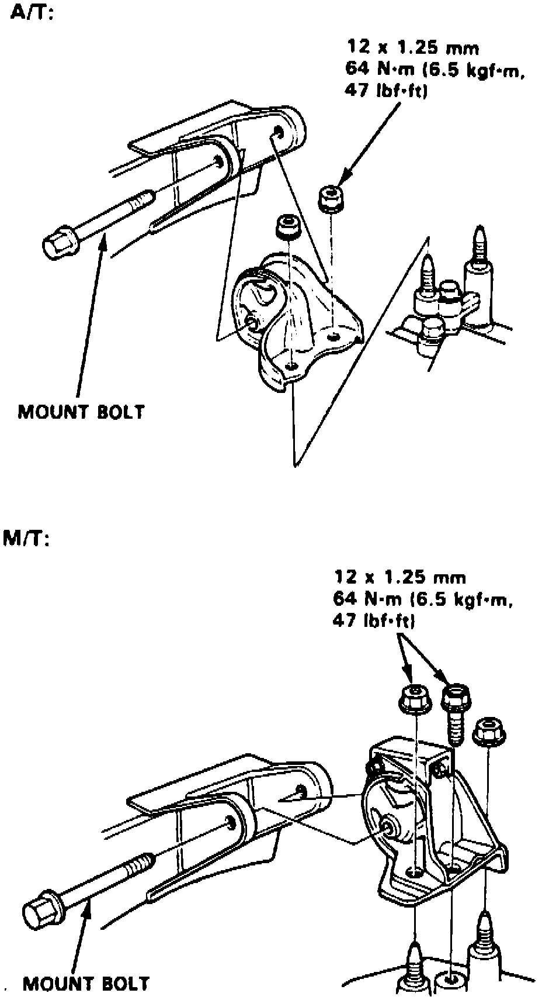
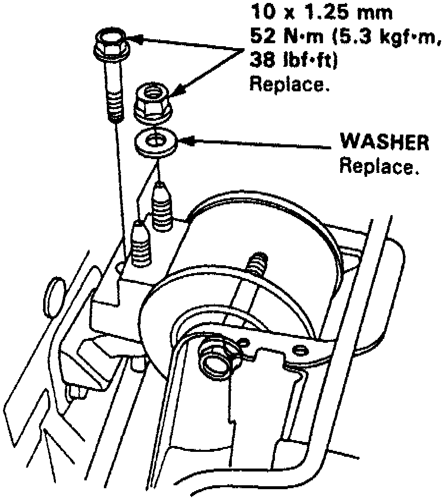
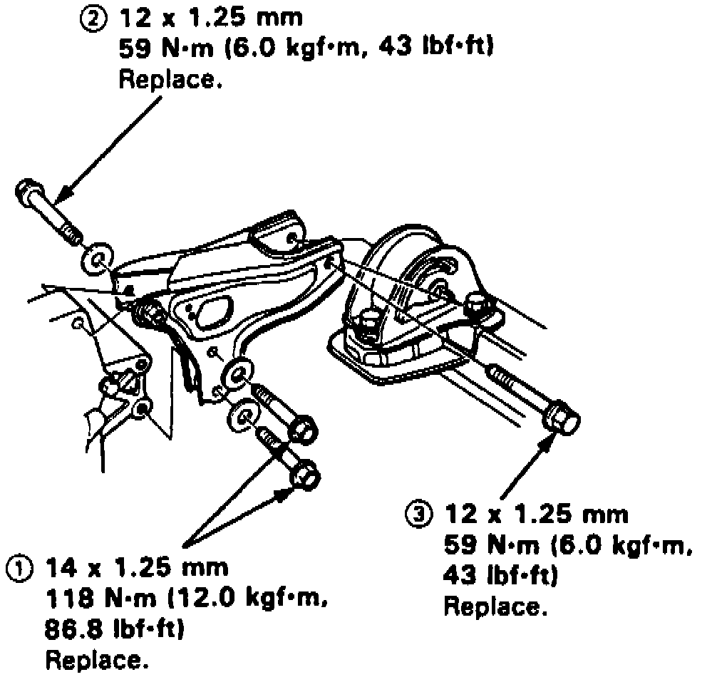
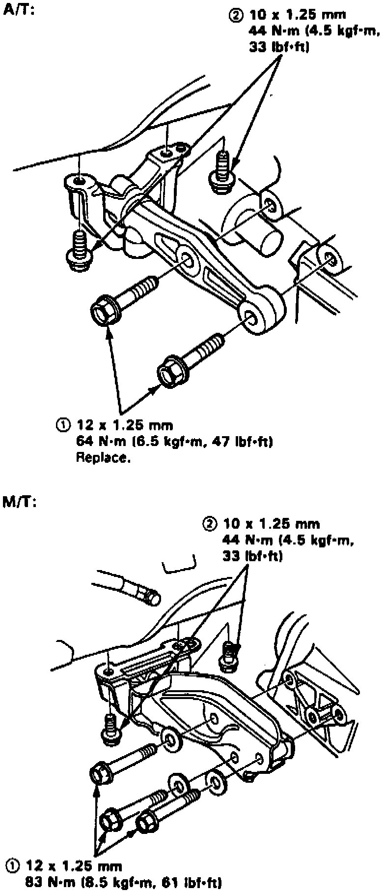
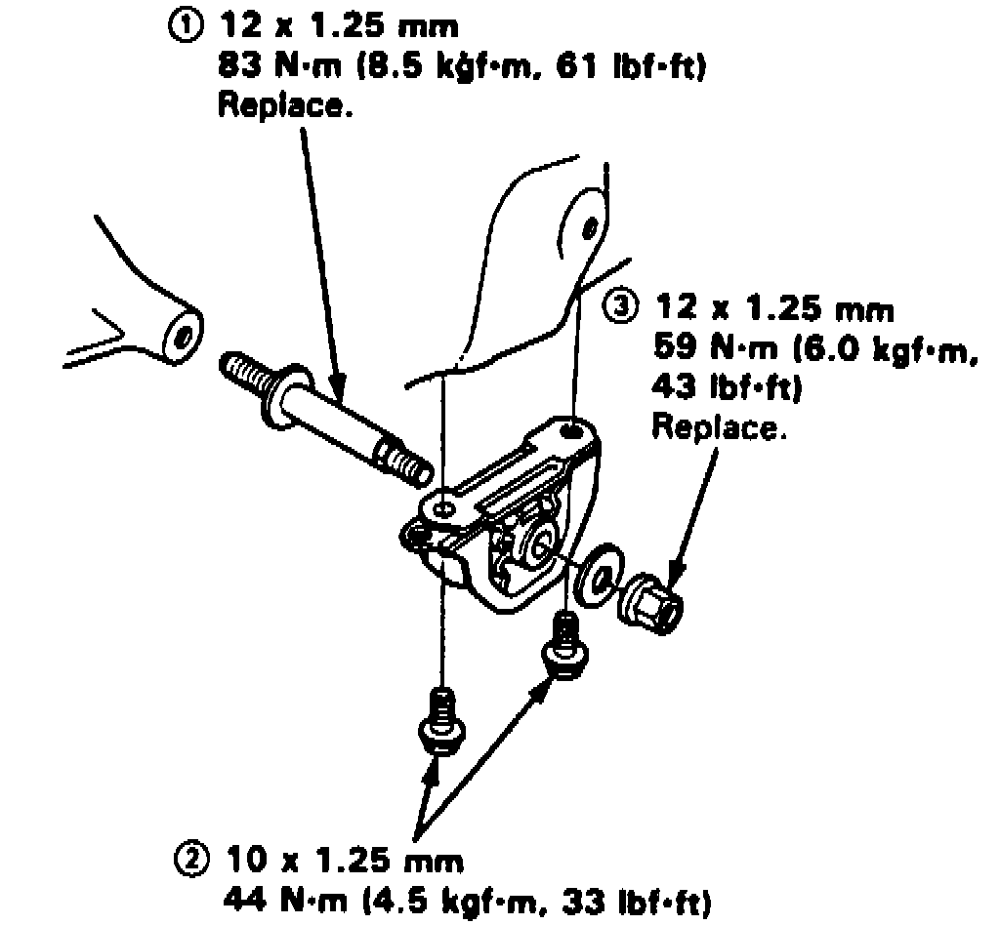

Engine: Service and Repair
1. On models equipped with radio coded theft protection system, refer to Vehicle Damage Warnings for system disarming and arming procedures. On models equipped with airbag system, refer to Technician Safety Information for system disarming and arming procedures.2. Disconnect battery cables at battery and at underhood fuse/relay boxes, then remove air intake duct, air cleaner housing and bracket.
3. Remove evaporative emission (EVAP) vacuum hose, control canister hose and engine wire harness connectors on righthand side of engine compartment, then relieve fuel system pressure as described under Technician Safety Information.
4. Remove fuel feed, brake booster vacuum and fuel return hoses, then loosen throttle cable locknut and remove cable by slipping end out of accelerator linkage.
5. Remove engine wire harness connectors, terminal and clamps on lefthand side of engine compartment, then remove cruise control actuator.
6. Disconnect engine ground cable at body, then remove power steering pump adjusting bolt and mounting bolt.
7. Remove power steering pump and belt. Do not disconnect pump hoses.
8. Loosen idler pulley bolt and adjusting bolt, then remove A/C compressor belt.
9. On models with manual transaxle, remove clutch slave cylinder and hose. Do not disconnect hose.
10. Remove transaxle ground cable and radiator cap, then raise and support vehicle.
11. Remove front wheels and splash shield, then drain engine coolant, oil and transaxle lubricant. Install new washers on drain plugs.
12. Remove radiator and heater hoses.
13. On models with automatic transaxle, disconnect transaxle cooler lines at radiator.
14. Remove radiator and A/C compressor. Do not disconnect A/C refrigerant hoses.
Fig. 5 Exhaust Pipe & Heated Oxygen Sensor Removal:

15. Disconnect heated oxygen sensor connector and remove exhaust pipe as shown, Fig. 5, then disconnect shift linkage and remove damper fork.
16. Using a suitable ball joint remover, disconnect ball joints at lower suspension arm, then remove driveshafts. Wrap driveshaft ends in protective plastic bags.
Fig. 6 Engine Lift Attachment:

17. Lower vehicle and attach a suitable engine lift fixture to engine as shown, Fig. 6, then remove left and right front mounts and brackets.
18. Remove rear mount bracket, side engine mount and transaxle mount, then ensure all vacuum lines, fuel lines and electrical wires have been cleared from engine lift path.
19. Lift engine carefully from vehicle.
Fig. 7 Transaxle Mount Installation:

Fig. 8 Engine Side Mount Installation:

Fig. 9 Engine Rear Mount Bracket Installation:

Fig. 10 Engine Right Front Mount/Bracket Installation:

Fig. 11 Engine Left Front Mount Installation:

20. Reverse procedure to install. Install and tighten engine/transaxle mounts as follows:
a. Install transaxle mount, Fig. 7, and tighten bolt and nuts on transaxle side. Install but do not tighten mount bolt.
b. Install engine side mount, Fig. 8, and tighten bolt and nuts on engine side. Install but do not tighten mount bolt.
c. Torque transaxle mount bolt and side engine mount bolt to 54 ft. lbs., then install rear mount bracket and tighten bolts in sequence shown, Fig. 9.
d. Install right front mount and bracket and tighten bolts in sequence shown, Fig. 10, then install left front mount and tighten bolts in sequence shown, Fig. 11.
21. On models equipped with radio coded theft protection system, refer to Vehicle Damage Warnings for system disarming and arming procedures. On models equipped with airbag system, refer to Technician Safety Information for system disarming and arming procedures.